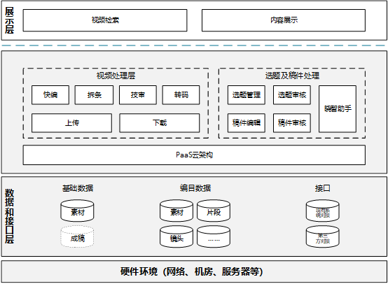

项目背景
中国新闻网是知名的中文新闻门户网站，也是全球互联网中文新闻资讯最重要的原创内容供应商之一。中国新闻社视频新闻部从2010年组建至今已积累了大量的宝贵视频资料及数据。但是记者及编辑人员在需要调取历史素材制作新闻稿件时，往往需要花费大量的检索时间才能找到相关视频素材，如何快速地完成通稿视频的制作、如何在海量视频库中发现相关的素材文件进行复用，已成为制约业务发展的重要瓶颈。
解决方案
根据全球华语视频资讯共享平台的功能定位，需要制定一套统一的、规范的媒体资料存储系统平台，平台的建设和运作必须保持业务系统的相对独立性；做好安全风险监控也是平台运行必不可少的环节之一。阳光云视基于客户当前的需求，对系统业务进行设计规划，基于云平台三层架构进行规划。其中展示层，主要提供检索发布、交换运营、内容推荐、展示门户等服务。能力层，主要为视频处理服务、稿件服务、PaaS 服务等。数据及接口服务，提供基础数据、编目数据、接口服务等。
在充分调研中国新闻社现有及未来一段时间业务需求的基础上，进行科学规划，将更加精细化多形式的检索和展示、提高内容处理效率和多维度稿件管理能力，增加稿件丰富性，从三个维度进行开发部署以满足客户的需求。
